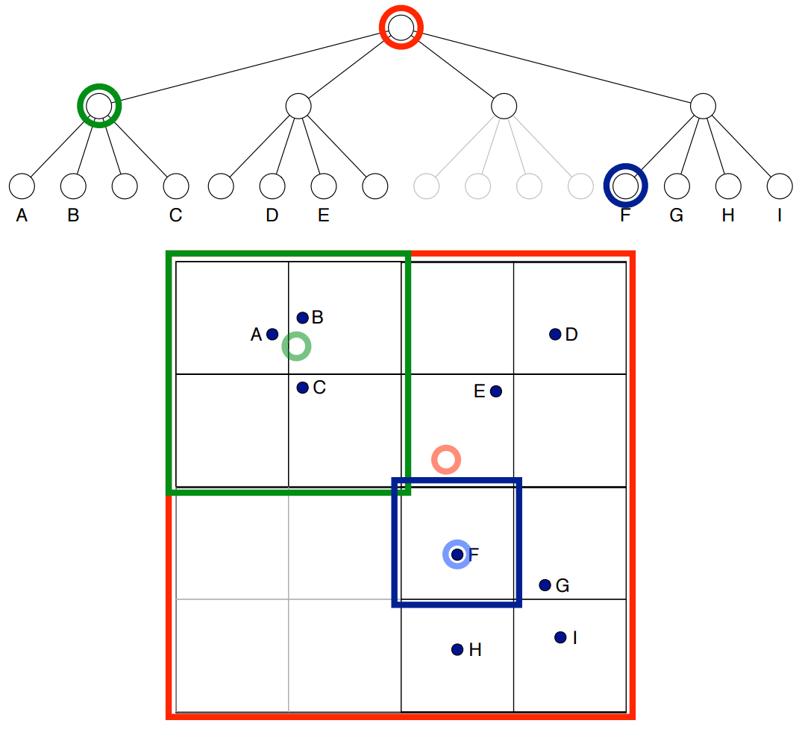

Расстояние Кульбака—Лейблера
Как измерять расстояние между распределениями?
- Коэффициент корреляции?
- идейно просто определяется
- неудобный градиент
- $\in [-1,\,1]$
- Расстояние Кульбака—Лейблера
- удовлетворяет некоторым естественным свойствам
- не является метрикой
Расстояние Кульбака—Лейблера
\(\newcommand{\KL}{\mathrm{KL}}\)
Разыскивается: $\step{\KL(\green{\bfP};\,\red{\bfQ})}\step{=\KL(\green{p_1,\,\ldots,\,p_n};\,\red{q_1,\,\ldots,\,q_n})}$
- $\KL(\green{p_1,\,\ldots,\,p_n};\,\red{p_1,\,\ldots,\,p_n})=0$
- $\KL(\green{p_1,\,\ldots,\,p_n};\,\red{q_1,\,\ldots,\,q_n})$
$=\KL(\green{p_{\pi(1)},\,\ldots,\,p_{\pi(n)}};\,\red{q_{\pi(1)},\,\ldots,\,q_{\pi(n)}})$
- $\KL\left(\green{\frac{1}{m},\,\ldots,\,\frac{1}{m},\,0,\,\ldots,\,0};\,\red{\frac{1}{n},\,\ldots,\,\frac{1}{n}}\right)$
— убывающая функция по $m$ при $m\le n$.
Разыскивается: $\KL(\green{\bfP};\,\red{\bfQ})=\KL(\green{p_1,\,\ldots,\,p_n};\,\red{q_1,\,\ldots,\,q_n})$
- Если $P_1=\sum_{i=1}^{r}p_i$, $P_2=\sum_{i=r+1}^np_i$, $Q_1=\sum_{i=1}^{r}q_i$, $Q_2=\sum_{i=r+1}^nq_i$, то
$\KL(\green{p_1,\,\ldots,\,p_r,\,p_{r+1},\,\ldots,\,p_n};\,\red{q_1,\,\ldots,\,q_r,\,q_{r+1},\,\ldots,\,q_n})$
$\step{=\KL(\green{P_1,\,P_2};\,\red{Q_1,\,Q_2})}$
$\step{+\green{P_1}\cdot\KL(\green{\frac{p_1}{P_1},\,\ldots,\,\frac{p_r}{P_1}};\,\red{\frac{q_1}{Q_1},\,\ldots,\,\frac{q_r}{Q_1}})}$
$\step{+\green{P_2}\cdot\KL(\green{\frac{p_{r+1}}{P_2},\,\ldots,\,\frac{p_n}{P_2}};\,\red{\frac{q_{r+1}}{Q_2},\,\ldots,\,\frac{q_n}{Q_2}}).}$
\[\begin{xy}\xymatrix@R=0.1px{
&&&&&{\red{q_1}}\ar@{-}[dlll]\\
&&{\red{Q_1}}\ar@{-}[dddll] &&&{\red{q_2}}\ar@{-}[lll]\\
&&&&&\vdots\\
&&&&&{\red{q_r}}\ar@{-}[uulll]\\
*[o]{\circ}&&&&&\\
&&&&&{\red{q_{r+1}}}\ar@{-}[ddlll]\\
&&&&&{\red{q_{r+2}}}\ar@{-}[dlll]\\
&&{\red{Q_2}}\ar@{-}[uuull]&&&\vdots\\
&&&&&{\red{q_n}}\ar@{-}[ulll]
}\end{xy}
\begin{xy}\xymatrix@R=0.1px{
&&&&&{\green{p_1}}\ar@{-}[dlll]\\
&&{\green{P_1}}\ar@{-}[dddll] &&&{\green{p_2}}\ar@{-}[lll]\\
&&&&&\vdots\\
&&&&&{\green{p_r}}\ar@{-}[uulll]\\
*[o]{\circ}&&&&&\\
&&&&&{\green{p_{r+1}}}\ar@{-}[ddlll]\\
&&&&&{\green{p_{r+2}}}\ar@{-}[dlll]\\
&&{\green{P_2}}\ar@{-}[uuull]&&&\vdots\\
&&&&&{\green{p_n}}\ar@{-}[ulll]
}\end{xy}\]
Расстояние К—Л в кодировании информации
- Символы $a_1,\,\ldots,\,a_n$ встречаются с частотами $p_1,\,\ldots,\,p_n$.
- Оптимальный код кодирует $a_i$ словом длины $\approx \log_2\frac{1}{p_i}$
- Закодированный текст больше исходного в $\approx \sum_ip_i\log_2\frac{1}{p_i}$ раз
- Пусть вместо точных значений $\{\green{p_i}\}$ известны приближённые $\{\red{q_i}\}$.
Построенный по $\{\red{q_i}\}$ код будет увеличивать тексты в $\approx \sum_i\green{p_i}\log_2\frac{1}{\red{q_i}}$ раз
- $\mathrm{KL}(\green{p_1,\,\ldots,\,p_n};\,\red{q_1,\,\ldots,\,q_n})$ — «штраф» за неточное знание.
Возвращаемся к t-SNE…
-
Вычисляем «похожести» \(\bfx_i\) и \(\bfx_j\) по формулам:
\[p_{j\mid i} = \begin{cases}\frac{e^{-\lVert\bfx_i - \bfx_j\rVert^2 / 2\sigma_i^2}}{\sum_{k \in \calN_i} e^{-\lVert\bfx_i - \bfx_k\rVert^2 / 2\sigma_i^2}}, \text{ при $j\in\calN_i$,}\\ 0\text{ иначе.}\end{cases}\]
\(p_{ij} = \frac{p_{j\mid i} + p_{i\mid j}}{2N}\)
-
Вычисляем «похожести» \(\bfy_i\) и \(\bfy_j\) по формулам:
\[q_{ij} = \frac{(1 + \lVert \bfy_i - \bfy_j\rVert^2)^{-1}}{\sum_{k \neq i} (1 + \lVert \bfy_k - \bfy_i\rVert^2)^{-1}}\]
- Оптимизируем расстояние Кульбака—Лейблера между \(p_{ij}\) и \(q_{ij}\). Градиент:
\[\frac{\delta C}{\delta \bfy_i}=4\sum_{j:\:j\neq i} (p_{ij}-q_{ij})q_{ij}\cdot Z\cdot (\bfy_i-\bfy_j),\]
где \(Z=\sum_{k\neq l}(1+\lVert\bfy_i-\bfy_j\rVert^2)^{-1}.\)
\[\begin{array}{l}
\frac{\delta C}{\delta \bfy_i}=4\sum_{j:\:j\neq i} (p_{ij}-q_{ij})q_{ij}\cdot Z\cdot (\bfy_i-\bfy_j)\\
\fragment{=4(F_{\text{attr}}+F_{\text{rep}})}\\
\fragment{=4\left(\sum_{j:\:j\neq i} p_{ij}q_{ij}\cdot Z\cdot (\bfy_i-\bfy_j)-\sum_{j:\:j\neq i} q_{ij}^2\cdot Z\cdot (\bfy_i-\bfy_j)\right)}\\
\end{array}\]
Дерево квадрантов

Условия отсечения: \(\frac{r_{\text{cell}}}{\lVert \bfy_i- \bfy_{\text{cell}}\rVert}\le \theta\)